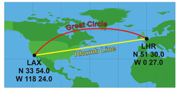

High accuracy - This method employs the Vincenty formula[1] for calculating geodesic distances between a pair of coordinates using an accurate ellipsoidal model of the earth. The result is accurate to better than 0.03% of the ellipsoid.[4]
Great-circle - Plots a line along a spherThe Haversine formula[2] is based on a spherical model. It is accurate to around 0.3% (increasing to 0.55% when crossing the equator)[4].
Rhumb line - this is a constant bearing line, sometimes referred to as a loxodrome. Over long distances, it is the least accurate (to around 11%) method because it is effectively tracing a spiral path.
When plotting distances on the earth, it's best to visualize what's going on with a picture showing a trip from Los Angeles (LAX) to London (LHR):

With High Accuracy and Great Circle methods, we're tracing a line along the surface of the earth. This is the shortest distance, and indeed approximates the route that the airplane would (ideally, if air traffic control weren't involved) traverse. When it's shown on a 2D map, it appears to curve. This is an artifact of the distortion that the 2D map inflicts on us.
If we select the Rhumb line, the 2D map looks like we're going straight there. It is a constant bearing, meaning we're intersecting longitudes at the same angle. When we look at the path on along the earth, we're actually making a spiral. For our trip, we'll travel over 10% further!
Method
Distance (km)
(miles)
High Accuracy
8782.578
5457.241
Great Circle
8755.696
5440.538
Rhumb Line
9727.5
6044.388
Sources:
[1] Thaddeus Vincenty, Survey Review, Volume 23, Number 176 (April 1975) - Directorate of Overseas Surveys of the Ministries of Overseas Development. (PDF).
[2] R.W. Sinnott, "Virtues of the Haversine",
Sky and Telescope, vol. 68, no. 2, 1984, p. 159. (Wikipedia explains the mechanics. See also Dr. Math's derivation.)
[3] Robert G. Chamberlain, JPL, comp.infosystems.gis. (FAQ)
[4] Chris Veness (link)